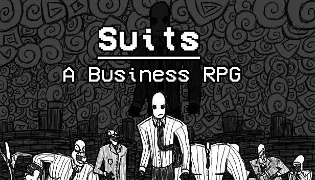
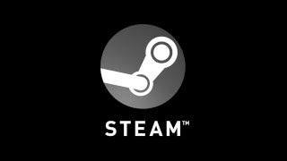

- Inicio
- Quem Somos Nós?
- Habilidades Necessárias
- Escolhendo um Gênero
- Montando um Time
- Ferramentas
- Financiamento
- Marketing
- Lançando Seu Jogo
Quem Somos Nós?
Nós nos chamamos Danilo Cavedon e Falme Streamless;
Danilo Cavedon: Game designer e desenvolvedor com experiência em C# para Unity, HTML5, CSS, PHP. Na Hyperactive Desenvolvimento Digital, trabalhou com marketing, identidade visual, advergames e jogos educacionais. Desde 2017, na Ficciona Produções, aplica sua especialização em storytelling e jogos digitais, apoiando o desenvolvimento de novos projetos. Atualmente, trabalha como programador e game designer nos projetos “Playpolis - Brincar de História” e “Super Idade”.
Falme Streamless: Desenvolvedor de jogos, Desenvolvedor de websites e entusiasta em Segurança da Informação que já mexeu com várias tecnologias como Unity3D C#, Flash ActionScript, Construct2, XNA e outras que não existem mais. Trabalhei com jogos de entretenimento, educacionais, advergames e porting para várias plataformas como Xbox One, PS4, Nintendo Switch, Android, iOS, WebGL e Steam. Também auxilio alunos de faculdade de jogos digitais e mentorias para pequenos grupos e/ou empresas. Atualmente me aventurando na ferramenta Godot Engine.
Nos conhecemos na faculdade de Jogos Digitais, fizemos e estamos fazendo vários projetos juntos, mas sentimos a necessidade de retibuir o que a área de jogos nos ofereceu e ajudar novos criadores de jogos a melhorar o mercado e a cultura brasileira.
Logo abaixo está várias pequenas recomendações para qualquer um que queira desenvolver jogos. As recomendações não vão funcionar para todos. É muita coisa e muitas vezes será difícil, chato, longo e demorado. Desenvolver jogos é como qualquer outro trabalho. Mas se for isso que está em busca, saiba que este lugar é seu ponto de salvamento ou checkpoint, toda vez que tiver uma dúvida, volte aqui para que tudo fique mais claro. E que seja tão divertido fazer jogos quanto é divertido jogar jogos.
E mais uma coisa, nós estamos criando e reproduzindo essas dicas e recursos voltado para o público e contexto brasileiro.
Quais habilidades eu preciso saber antes de começar?
E se eu te dissesse que você não precisa de nenhuma? Bem, adivinhe, você não precisa. Vivemos em uma eṕoca que podemos aprender qualquer coisa que precisa para desenvolver um jogo com facilidade. Mesmo que você acredite em talento e que algumas habilidades vem de nascença, Todos nós podemos aprender e nos dedicar a sermos melhores no que queremos fazer. Você pode fazer o mesmo. Abaixo temos alguns jogos que provam isso e que vão te inspirar.
Você não precisa ser um(a) artista incrível.

Thomas Was Alone é feito só com retangulos. Tudo, tudinho. Tudinho mesmo. Até as partículas. Também vai te emocionar e fazer chorar. Thomas Was Alone é uma obra prima na arte minimalista e narração. Você pode fazer formas simples. Você pode aprender particulas só com formas simples. Você pode criar um jogo só com formas e angulos que alcança o mesmo objetivo que Thomas Was Alone. Você consegue fazer um jogo.

Suits A Business RPG foi feito com um pixel art bem simples e desenhado com lápis num papel e escaneado para o computador. É totalmente único e incrível. Isso mostra que você pode mudar os padrões dos jogos atuais e ainda ter sucesso. Se você pode rabiscar seus personagens num papel, então você consegue fazer um jogo.
West of Loathing é um glorioso sucessor do Kingdom of Loathing. É feito completamente com boneco de palito e um humor muito louco. Sua simplicidade cartunesca realmente ajuda a imergir na história e piadas do jogo o que faz ser ainda mais engraçado. Se você consegue fazer um boneco de palito, então você consegue fazer um jogo.
Nepenthe faz um trabalho similar ao Suits A Business RPG. Foi feito inteiramente com lápis de cor, escaneado para o computador e usado como tiles e assets no jogo. O efeito acaba sendo uma aventura bem única e surreal. Se você consegue desenhar rabiscos num papel, então você consegue fazer um jogo.
Você não precisa ser um(a) musicista incrível.
Hidden Folks é uma bela evolução do "Onde está o Wally?". É super simples em seu conceito, mas muito efetivo na sua execução. A parte que mais chama a atenção nesse jogo é o áudio, em que tudo, e quando eu digo tudo é tudo mesmo, é feito com sons da boca. Toda a música, os efeitos sonoros, todo o áudio foi feito com o rosto de alguém. É incrível. Se você tem um rosto, então você consegue fazer um jogo.
Você não precisa ser um(a) programador(a) incrível.

Sim, é isso mesmo que você leu. Undertale é um jogo INCRÍVEL. Tem um combate único, ótima história, os quebra-cabeças são bons, e tem boas piadas ruins a rodo. Toby Fox era só um programador iniciante quando começou e o código tem umas escolhas duvidosas em eficiencia. Mas isso importa? O jogo vai ser menos divertido por causa disso? Dica: Não importa. Você pode aprender programação enquanto desenvolve o jogo. Você consegue fazer um jogo.
Que tipo de jogo eu deveria fazer?
Todos nós queremos fazer o maior jogo e o mais impressionante que qualquer um ja viu antes. Queremos mostrar o jogo e receber admiração dos outros. Queremos fazer algo que mereça reconhecimento. Nós queremos fazer logo de cara o jogo dos sonhos e que todo mundo vai se impressionar pelo quão incrível nós somos. Não. Não faça isso como seu primeiro jogo.
Se você quer fazer o jogo dos seu sonhos, é como se você quisesse derrotar o chefe final no seu primeiro level. Você precisa subir de nível com os pequenos inimigos primeiro, para entender como funciona. Você precisa entender que tipo de desenvolvedor você é. Você precisa aprender quais tipos de jogos você gosta de fazer e não de jogar. Você precisa achar o seu estilo e juntar o seu nicho no mundo do desenvolvimento. Todos nós temos uma vocação e fazendo coisas pequenas vai te ajudar a encontrar a sua.
Isso também não significa que você tem que infelizmente ter que só passar pelos tutoriais e milhares de projetos que nunca vão ver a luz do dia. Significa que você terá que fazer algo pequeno com a intenção de lançar e receber feedbacks, comentários e opiniões para que você possa evoluir. Jogar algumas sessões de RPG Dungeons e Dragons e mestrar algumas campanhas com um mundinho que você criou. Faça um jogo arcade, publique ele, e veja como que o público reage a ele. Entre em Game Jams e sinta como é trabalhar com outros desenvolvedores como um time. Melhore sempre para que possa fazer jogos incríveis.
Uma das melhores maneiras de começar esse processo é montando um GDD, ou Game Design Document. Esse documento é a bíblia do projeto que vai ajudar a organizar o projeto inteiro e manter dentro do escopo. Também ajuda a escolher qual a melhor engine e/ou linguagem que pode funcionar para o seu projeto antes de você se dedicar a ele. Em geral um GDD poupa tempo e dinheiro no desenvolvimento o que é sempre benefico.
Mesmo com toda a nossa experiência anterior ainda temos dificuldades em lançar jogos de forma indie. Sempre trabalhamos para uma empresa. Nunca lançamos uma demo ou construímos uma comunidade. Mas estamos fazendo pequenos projetos, que faz nosso trabalho melhor. Outras experiências também ajudam no desenvolvimento. Parte do que aprendemos nas empresas de jogos facilita nos processos e erros já cometidos para que não se repita nos proximos jogos. E esse processo de aprendizado e melhoria tem que fazer parte de tudo que fazemos, pois nenhuma experiência é desperdiçada, não só para você, mas também para quem trabalha com você.
Como eu monto um time?
No nosso mundo moderno isso é mais fácil do que parece. Existem servidores no Discord para se juntar e participar de game jams, para se sentir confortavel em fazer jogos. Game Jams que pode ser encontrado no Itch.io. Você pode achar CENTENAS de game jams lá e juntar várias pessoas para participar de uma dessas jams. Quanto mais você participar, mais confiante e melhor será para as suas habilidades em game jams e em ajudar o seu time.
Partindo disso é só uma questão de tempo para escolher um time para trabalhar contigo de forma financeira. Isso vai ser determinado de forma concordada do time em questão. Pode ser que os valores sejam divididos entre os desenvolvedores, pode ser que dê um incentivo maior para as vendas da Trilha sonora para os(as) musicistas, ou qualquer outro método que faça sentido para seu contexto. Mas é extremamente importante que as pessoas sejam compensadas pelo trabalho que ela faz e o método de pagamento seja concordado entre todas as partes logo de início. Tente não magoar ninguém nem cair em problemas legais.
Da mesma forma que ciar jogos é uma habilidade que se aprende e consome tempo pra ficar bom nisso, o gerenciar e entender um time também leva tempo para aperfeiçoar. Quanto mais game jams e/ou projetos sociais que você trabalhar, melhor você ficará nele. Aprenda de cada experiência vivida, tome notas, aprenda sobre você e seus limites, aprenda a ler as pessoas e ambiente quando elas estão trabalhando demais ou no seu limite. Ser um líder leva tempo e é um processo sem fim, então não se culpe se acabar errando de vez em quando.
Ferramentas
Exatamente agora é o melhor momento na história para fazer jogos. As ferramentas para isso são de fácil acesso e milhares estão baratas ou de graça para qualquer um acessar. Ferramentas que fazem com que possamos nos conectar e trabalhar juntos, porém a distância como Discord. Ferramentas com soluções para onde colocar os arquivos como Google Drive ou Github, assim podendo compartilhar arquivos e trabalho sem um grande investimento financeiro.
Não existe melhor Game Engine.
Escolha uma engine que dá suporte ao seu estilo de jogo e capacidade financeira. Não escolha engines baseado no que outras pessoas dizem que é a "Melhor" engine. Não existe uma "Melhor" egine. Existem ótimas engines para diferentes tipos de jogos. Ferramentas não são simplificadas baseada no seu preço ou falta de preço. Tem centenas de engines disponíveis por ai. Vá para o endereço Engines Database e explore suas opções.
Doki Doki Literature Club foi feito em uma ferramenta grátis chamada Ren'Py que é feita especificamente para criar visual novels. Risk of Rain foi feito em GameMaker e MS Paint. Sim, você leu certo... MS Paint. O custo das suas ferramentas não define o valor do que vai criar.
Entenda que logo abaixo não é uma exaustiva lista de engines. Existe uma tonelada de engines que são boas ou ótimas para uma variedade de estilo de jogos para se criar. Então explore, encontre coisas, monte coisas, crie coisas, e não seja elitista sobre ferramentas.
Godot é Monstro. Completamente montado pela comunidade, totalmente Open Source e inteiramente de graça. É excelente para 3D e maravilhoso em 2D, e está começando a ser usado por grandes empresas. Você literalmente não consegue ter uma oportunidade melhor para um pequeno estudio do que uma engine que é de graça. Literalmente de graça. Não de graça com uma pegadinha. Realmente de graça. Use Godot, de verdade. Godot foi usado para fazer Dome Keeper e Endoparasitic.
GameMaker é uma ótima engine para fazer jogos 2D, mas não muito para 3D. Você pode usar a avaliação gratuita indefinidamente para uso não comercial e permite exportações para desktop PC, bem como para Web e mobile. O modelo de monetização é a seguinte: 100 dólares uma vez para uma licença vitalícia, para Consoles são 80 dólares por mês ou 800 dólares por ano. Eles não cobram royalties, o que é ótimo se o seu jogo der super certo. O Game Maker Studio foi usado para fazerHeartbound, Hyper Light Drifter, Risk of Rain, Nuclear Throne, Pizza Tower e Undertale.

Unreal Engine é super poderoso na arena 3D. Possui um ótimo modelo de monetização. Se o seu jogo ganhar menos de US$ 1.000.000 ao longo de sua vida útil, você não pagará nada. Qualquer coisa além disso tem royalties de 5% marcados. Eles também são totalmente gratuitos para uso em projetos não monetizados. Definitivamente ótimo para startups, mas pode ter uma curva de aprendizado bem difícil e específica. Unreal foi usado para fazer Fortnite, Conan Exiles, Kingdom Hearts 3, e Octopath Traveler.
Ren'Py é uma engine fantástica feita especificamente para romances visuais (Visual Novels). É totalmente gratuito, fácil de usar e possui uma grande comunidade caso tenha problemas com python ou em busca de exemplos. Definitivamente capaz de fazer alguns jogos incríveis e interessantes. Ren'py foi usado para fazer Doki Doki Literature Club.
Não existe melhor programa de arte.
Assim como acontece com engines, você deve escolher o programa de arte que funciona melhor para você. Só porque um programa custa mais ou é mais usado em determinados círculos não significa que seja melhor para você ou para seu fluxo de trabalho. Todo mundo trabalha de maneira diferente e todos se sentem mais ou menos confortáveis com diferentes softwares e hardwares. Se você quiser usar o MS Paint em um tablet, tudo bem. Se você quiser usar o Photoshop em um Cintiq, tudo bem também.
Aseprite é o verdadeiro deus das ferramentas de pixel art. Custando 38 reais, essa ferramenta é super acessível, mas também traz um bônus extra. Você pode obtê-lo gratuitamente. Se você compilar o Aseprite do github deles então você terá a ferramenta totalmente de graça para você. Pegue essa ferramenta, use ela, faça incríveis pixel art.
Gimp é uma ferramenta de edição de imagens incrivelmente fantástica, geralmente desprezada por ser o irmão feio do Photoshop. Dito isto, tem alguns superpoderes que o Photoshop não tem... não é propriedade da Adobe e é totalmente gratuito. Gimp é usado para muitas coisas ao longo dos anos, desde arte promocional até retoques em logotipos ou criação de recursos no jogo. Definitivamente, dê uma olhada nele, se não fez ainda.
Blender é uma ferramenta de modelagem e animação 3D realmente poderosa e totalmente gratuita. Ele pode fazer coisas absolutamente insanas e, à medida que continua a evoluir, atingiu ou excedeu o poder das melhores ferramentas de modelagem 3D disponíveis no mercado. Se você deseja construir assets incríveis em 3D, então este é o seu carro-chefe.
Não existe melhor programa de áudio.
As informações sobre áudio é baseada nas informações de Stijn van Wakeren, pois não é realmente a nossa área de especialização. Definitivamente, você deve contatá-los se tiver dúvidas sobre esses programas ou quiser obter mais informações sobre por que eles são tão poderosos. Dito isto, aqui estão alguns programas incríveis que você pode usar para criar música ou efeitos sonoros com relativa facilidade.
FamiStudio é uma ferramenta gratuita incrível para criar chiptunes e efeitos sonoros no estilo NES. Há uma enorme comunidade de fãs construída em torno dele e vários Tutoriais do Youtube para você começar a fazer sons. Eu realmente amo os sons que saem dessa coisa e realmente atinge aquele fator nostálgico. Você pode até revisar o código-fonte ou compilar ele você mesmo. Honestamente incrível.
Anvil Studio é uma plataforma de design de áudio MIDI totalmente gratuita. Se você está apenas começando ou realmente quer um toque oldschool agradável em seu áudio, eu realmente recomendo dar uma olhada. Você pode até imprimir partituras de suas criações com um de seus complementos.
FL Studio é de longe o favorito para ferramentas de áudio. É incrivelmente fácil de usar, incrivelmente versátil, permitindo que você crie uma ampla variedade de coisas incríveis, e é bastante acessível, com um preço de 100 dólares para atualizações vitalícias. Se você realmente quer fazer mágica no áudio e quer algo poderoso e duradouro, o FL Studio é a escolha certa.
Como faço para arrecadar dinheiro?
Ganhar dinheiro como desenvolvedor independente pode ser uma tarefa realmente difícil, especialmente quando você está apenas começando. O conselho que sempre darei é não abandonar seu trabalho diário. Faça jogos como um hobby no início. Volte para casa todos os dias do trabalho e passe algumas horas trabalhando no seu jogo. Faça disso uma rotina. Economize dinheiro a cada cheque de pagamento em seu fundo independente para ajudar a obter ativos e software para o seu hobby. Mantenha as coisas pequenas e isso é absolutamente viável.
Existem várias maneiras de arrecadar fundos externos para seus jogos. Vou listar alguns deles abaixo e os pontos fortes e fracos de cada um. Cada plataforma tem seus benefícios e cada plataforma tem seus pontos fracos. Espalhar seu jogo para mais plataformas dificulta o gerenciamento, mas também pode ampliar seu alcance. É tudo uma questão de equilíbrio e impacto, e esse processo será diferente para cada jogo. Vá devagar, descubra as coisas, mova-se quando parecer certo e você saberá que pode fazer isso.
Você também deve ficar atento às pessoas que estão tentando ganhar um pedaço do seu bolo de graça. Desenvolvedores recebem toneladas de ofertas fraudulentas todos os dias de todos os tipos de fontes. Se você acidentalmente pisar em qualquer uma dessas minas terrestres, poderá ser a morte do seu projeto sem que você perceba até meses ou até anos depois. Não se venda por pouco e fique atento a algumas das armadilhas abaixo. Esse é o seu bolo e você precisa protegê-lo.
Com tudo isso dito, aqui estão alguns métodos para ser usado para gerar dinheiro e ainda manter a máquina rodando.
Streaming
Twitch Tem sido a base da receitas de estúdios. Serve como uma ótima maneira de interagir com a comunidade, uma fonte de receita e uma propaganda interativa em tempo real do trabalho que realizamos.
Depois de uma longa caminhada Twitch recentemente criou a categoria de Desenvolvimento de Programas e Jogos. Finalmente temos um lar como desenvolvedores de jogos e não poderiamos estar mais feliz.
Publicadoras
Sempre que estiver pensando em contratar uma publicadora, tenha apenas uma pergunta em mente: Será que a ajuda da publicadora conduzirá a lucros superiores e além ao corte de receitas? Se você não sabe a resposta ou se a resposta for não, então você não precisa de uma publicadora. Se você pode lançar seu jogo sem uma publicadora, então você absolutamente deveria não contratar uma publicadora.
No geral, maioria das publicadoras pedem por 30%-70% da receita do seu jogo. Esse custo vem carregado de uma época triássica, dos dias onde as publicadoras manuseavam cartuchos físicos nas prateleiras das lojas de varejo. Não precisamos mais disso devido à distribuição digital como Steam, Humble Bundle, etc.
Kickstarter
Kickstarter é um ótimo lugar para arrecadar fundos quando você já tem uma base da comunidade e uma demonstração para apresentar. Eu não recomendaria seguir esse caminho antes de ter essas coisas prontas. Eu também não confiaria no Kickstarter como algo que financiará todo o desenvolvimento do seu jogo. Normalmente é usado como plataforma de marketing e para obter financiamento inicial para hardware, software e amostras de áudio. Espere para lançar seu Kickstarter até saber que terá sucesso. Não deixe isso ao acaso.
Serviços de assinatura
Ko-Fi é como Patreon se Patreon não fosse o verdadeiro diabo. Ao contrário do diabo real, o Ko-Fi cobra uma taxa fixa pelo seu serviço de assinatura. No momento são 54 dólares por ano. São 4,50 dólares por mês. Sem porcentagens ocultas ou outras malandragens. Literalmente todas as funcionalidades que o Patreon oferece, mas sem o imposto infernal de 8%.
Quando as pessoas ingressam nos "Tiers", elas também pagam imediatamente, para que não haja mais pagamentos de compensação ou conteúdo roubado quando alguém recusa seu cartão no final do mês. Eles também possuem um sistema de alerta para o seu stream e você pode aceitar doações por meio deles. Mude para Ko-Fi. Serio.
Golpes
Os golpes são uma armadilha muito comum no mundo do desenvolvedor independente. Não assine nada que não tenha lido. Se você não tiver certeza do que algo significa em um contrato, converse com um advogado. Se você acidentalmente distribuir chaves para o seu jogo, poderá gravá-las por meio das ferramentas do Parceiro Steam, então não se preocupe. Fora isso, aqui estão alguns exemplos de alguns golpes que devem ser evitados.
O golpe do influenciador
Esta é a forma mais comum de golpe direcionado a desenvolvedores independentes.
Você vai encontrar eles.
todos nós encontramos.
O golpe geralmente funciona por e-mail e começa com alguém alegando ser um streamer ou jornalista de jogos. Eles usarão o ícone correto para seu perfil, mostrarão links legítimos para contas de mídia social e falarão um pouco sobre seu conteúdo. No entanto, o e-mail não estará correto. Sempre verifique o e-mail comercial de um influenciador antes de enviar as chaves. Geralmente você pode encontrar isso na seção "Sobre" do YouTube. Pode ser apenas uma letra errada, mas não é o verdadeiro criador entrando em contato com você se o email não corresponder.
Esses e-mails são automatizados e a chave acaba indo parar em um site de terceiros para ser vendida por um preço inferior ao preço do seu jogo. Dos milhares de e-mails, apenas um punhado dos emails são seres humanos legítimos. Esteja atento em suas verificações e não se surpreenda com um criador potencialmente famoso enviando um e-mail para você.
Com isso em mente, minha maneira de lidar com isso mudou um pouco nos últimos anos. Agora dou a eles a Steam Key e a gravo 12 a 24 horas depois. Do lado dos golpistas, seu sistema automatizado verifica a chave e a coloca à venda. Aí alguém compra e não funciona. É provável que esse cliente deixe uma avaliação negativa para o vendedor fraudulento. Acerte-os onde dói. Em sua reputação. Depois de iniciar essa tática, meus e-mails fraudulentos de influenciadores diminuíram cerca de 90% e não voltaram. Acho que eles têm uma lista negra.
O golpe por vendas em pacote
Muitas vezes você receberá ofertas para fazer parte de um pacote. Os golpistas alegarão que você receberá entre 10-30% das vendas do pacote se lhes der 10.000-30.000 chaves Steam para o seu jogo. Se você assinar o contrato e enviar as chaves, eles começarão a vendê-las normalmente até certo ponto. A partir daqui eles iniciarão um “Happy Hour” e venderão de 5 a 10 vezes mais chaves por compra. Outra empresa sabe quando começa esse Happy Hour e vai comprar todas as chaves nos próximos minutos.
Você fica então com 10-20% do valor inicial que acreditava estar recebendo. Ao mesmo tempo, outra empresa agora possui dezenas de milhares de chaves de jogos e reduzirá os preços do Steam em todos os sites de chaves de terceiros na rede. Isso terá um impacto considerável na sua capacidade de vender cópias do seu jogo.
Esses golpes são raros, bem pensados e parecem lógicos do ponto de vista comercial. Fale com um representante jurídico e certifique-se de saber no que está se metendo antes de assinar qualquer coisa. Não se deixe levar por números de vendas brilhantes.
Marketing
Existem várias maneiras diferentes de abordar o marketing para desenvolvedores independentes. A principal coisa a lembrar sempre é que se alguém disser que existe uma maneira melhor, provavelmente está vendendo algo para você e isso geralmente só dá mais dinheiro para esse alguém. Faça o que achar melhor para seu estúdio, seus jogos e sua comunidade. Sempre.
Construindo uma comunidade
Construir uma comunidade é o mais importante em tudo isso. Sem a sua comunidade você não é absolutamente nada, não importa o quão incrível seja o seu jogo. Esta regra é válida independentemente do tamanho ou do financiamento do seu estúdio. Se você perder a fé dos seus jogadores, você perderá tudo.
Você nunca está acima de sua comunidade e nunca é importante demais para perder tempo respondendo a eles. No momento em que você pensa que é, eles lhe mostrarão o quão falso isso realmente é. Não se esqueça disso.
Redes Sociais
Existem vários lugares online onde você pode postar sobre seus jogos ou o que quer que esteja fazendo. Nunca perca uma oportunidade de fazer isso. Você é um desenvolvedor independente e precisa ficar no topo da montanha e gritar sobre isso. Você não é um Triple A com milhões de dólares para um orçamento de marketing, então aproveite todas as oportunidades que puder para mostrar seu trabalho às pessoas. Seu trabalho não precisa ser perfeito para falar sobre isso, então divulgue-o!
A forma como iniciamos esse processo foi configurando contas sociais para ajudar a reunir todas as pessoas em um só lugar. Estabelecemos o Discord como o principal centro comunitário que permitiu às pessoas um lugar comum para se encontrarem e se misturarem. Em seguida, configuramos contas satélite para direcionar as pessoas de volta ao Discord. Isso inclui coisas como Twitter, Instagram, Steam, Game Jolt, Itch.io, Twitch, YouTube, Reddit, e Guilded. Esse efeito de funil aumentou nosso Discord para mais de 4.000 membros e mantém todos na mesma página para que as atualizações não sejam perdidas pelos jogadores mais engajados.
As melhores e mais ativas plataformas de mídia social mudarão com o tempo, com base nos caprichos da Internet. É muito importante estar à frente dessas mudanças ou pelo menos acompanhá-las para não ser pego de surpresa. Eu rotineiramente visito vários sites e crio contas para o Pirate Software para ter certeza de que estamos preparados para o futuro.
É importante ver a sua presença nas redes sociais como algo muito pessoal para os seus jogadores. Simplesmente responder postagens aqui e ali, curtir ou entrar no stream de alguém quando ele joga seu jogo é enorme. Pode ser uma coisa simples para você, mas é absolutamente devastador para alguém que ama o seu trabalho. Faça isso. Comente todos os vídeos do YouTube sobre o seu jogo. Responda no Twitter sempre que alguém mencionar seu jogo de forma positiva e converse com as pessoas que responderam negativamente sobre como você pode melhorar seu jogo. ESTEJA LÁ para eles e eles estarão lá para você.
Muitos desenvolvedores mais novos tentarão imediatamente atirar em streamers ou youtubers famosos para alcançar os holofotes. Essas pessoas recebem milhares, senão dezenas de milhares de solicitações todos os dias. Concentre-se em sua comunidade e, eventualmente, um dos grandes nomes poderá notar e divulgar seu produto para seu público.
Anúncios Pagos
Geralmente fico longe de qualquer tipo de promoção paga. Como um desenvolvedor independente, você pode não ter muito dinheiro para gastar, então é difícil competir por olhos na internet com tantos grandes jogadores por aí. Tempo e recursos são muito melhor gastos em sua comunidade do que em qualquer outra coisa.
Dito isto, você pode querer experimentar diferentes métodos de publicidade. Você pode encontrar algo que funcione para você. Só porque nosso estúdio não encontrou um benefício aqui, não significa que você não encontrará.
Convenções
Definitivamente, participe de convenções, mas certifique-se de não esgotar a carteira do estúdio no processo. É muito fácil esquecer o custo da viagem, alimentação e outras despesas se você não planejá-las com antecedência. Fazer um orçamento de cada viagem antes de partir é importante quando você está apenas começando.
Você realmente deveria testar primeiro as águas com convenções locais menores. Nosso primeiro foi a Eugene Comic Con em Eugene Oregon e o estande nos custou apenas 20$ por um fim de semana inteiro. Conhecemos muitas pessoas, ganhamos muitos fãs e aprendemos como administrar melhor nosso estande para futuras convenções. Esse tipo de coisa é inestimável e realmente nos ajudou a chegar lá.
A mercadoria pode realmente ajudar a compensar os custos da convenção se você tiver algumas coisas boas. Tente levar adesivos, broches ou pelúcias para esse tipo de show porque eles acabam sendo vendidos muito rápido. Fique longe de itens quebráveis, como canecas, ou itens de tamanho restrito, como roupas, porque é muito mais difícil vender em um ambiente de convenção.
Prêmios
Os prêmios não são concedidos apenas a jogos incríveis da indústria. Você precisa solicitá-los e eles quase sempre terão uma taxa de cobertura. O preço geral está entre 50-100$ USD como padrão. Procure os formulários de inscrição para qualquer um dos prêmios dos quais você já ouviu falar e também fique atento a novas premiações menores.
Quase sempre há algo acontecendo e um prêmio pode realmente ajudar a colocar você e seu trabalho no mapa. Às vezes, eles também vêm com troféus ou imagens interessantes que você pode vincular às suas páginas públicas de lançamento.
Onde eu deveria lançar meu jogo?
Sim. Não, sério... sim. Existem tantos lugares diferentes onde você pode lançar seus jogos hoje. Adotamos uma abordagem muito centrada no Steam porque ela facilita muito o trabalho com terceiros. Isso nos permitiu ampliar imensamente nosso alcance sem aumentar muito nossa carga de trabalho total. Como uma equipe pequena, isso é enorme e funcionou bem para nós.

Steam é a melhor plataforma de monetização que existe para jogos. Com um front-end enorme voltado para a interação e feedback dos jogadores, um back-end robusto para ajudá-lo a gerenciar seus ativos e finanças e toneladas de ferramentas promocionais, o Steam realmente tem tudo.
O Steam tem vendas regulares em toda a plataforma nas quais você pode participar. Você pode definir o preço de venda e pode aceitar ou recusar à vontade. Eles não fazem nada com o seu jogo sem o seu consentimento em nenhum momento. Adicionar seu jogo a uma promoção geralmente dá um grande impulso à descoberta durante a venda. Se você colocar seu jogo à venda com pelo menos 20% de desconto ou mais, todos que colocaram o jogo na lista de desejos receberão um e-mail sobre isso. Use isso para ajudar a aumentar a visibilidade e colocar seu jogo nas mãos de mais pessoas.
Para cada jogo iniciado, você receberá cinco 'Rodadas de Visibilidade'. Esses VRs dão ao seu jogo um tempo de primeira página da ordem de 1.000.000 de impressões. Como um pequeno estúdio, este é um grande negócio e só deve ser usado para atualizações massivas. Esta é a sua hora de realmente mostrar seu jogo e obter uma grande quantidade de tráfego intenso. Você realmente precisa ter certeza de que tudo está sólido antes de disparar um desses. Além disso, se você iniciar seu jogo no Acesso Antecipado... depois de iniciar totalmente, você receberá imediatamente um VR gratuito que não contará nos cinco jogos. Lance no Acesso Antecipado, receba feedback, use-o para melhorar, lance totalmente e obtenha uma explosão gratuita de visibilidade.
O Steam fica com uma redução de 30% em todas as vendas, mas isso não conta toda a história. Eles permitem a localização regional de preços, o que aumenta ENORME a sua receita e também cobram 0% sempre que você vende uma chave Steam em uma plataforma de terceiros. Isso significa que você pode vender em qualquer lugar do mundo ou em outras plataformas com relativa facilidade e ao mesmo tempo gerenciar apenas uma única base de distribuição. Ao localizar nossos preços, nossa renda aumentou em 20-25% somente no Brasil. Localize seus jogos. Localize seus preços. O vapor é ótimo. Não deixe ninguém te convencer do contrário.
Humble Bundle é uma ótima plataforma intermediária que pode ajudar a melhorar suas vendas distribuindo chaves Steam. Eles não recebem nenhum valor de sua venda, a menos que você doe parte de seu lucro para eles, o que pode realmente ajudar quando você está apenas começando. Eles também têm um programa de parceria para que as pessoas que compram coisas que você recomenda possam lhe dar um pequeno aumento na renda de forma passiva. Geralmente coloco links de parceria para ferramentas e jogos que usamos ou jogamos em streaming.
Game Jolt é o deus dos sites de demonstração. Faça uma demonstração do seu jogo e coloque no Game Jolt. Quando lançamos uma demonstração de Heartbound no Steam pela primeira vez, vimos um tráfego mínimo. Assim que o colocamos no Game Jolt, milhares de pessoas o jogaram e, no primeiro ano, quase 95% de todos os vídeos do YouTube para Heartbound listaram o Game Jolt como o local de download. Foi muito importante para nós e realmente ajudou a divulgar o nosso jogo. Eles também oferecem um pouco de dinheiro extra com os anúncios exibidos na sua página de jogos. Eles não precisam fazer isso e é uma coisa muito boa para lucrar de vez em quando.
Itch.io tem mais capacidade de personalização do que qualquer outro site, mas infelizmente carece no departamento de descoberta. Você definitivamente levará a maioria das pessoas a encontrar sua página aqui, mas quando o fizerem... ah, minha ciência... será lindo. Quer dizer... basta olhar o nosso no link aí. Você também pode vender chaves Steam através do Itch.io como mais uma fonte de renda com grande efeito. Se você deseja uma vitrine sofisticada e bonita para realizar suas vendas, este é o site para você.